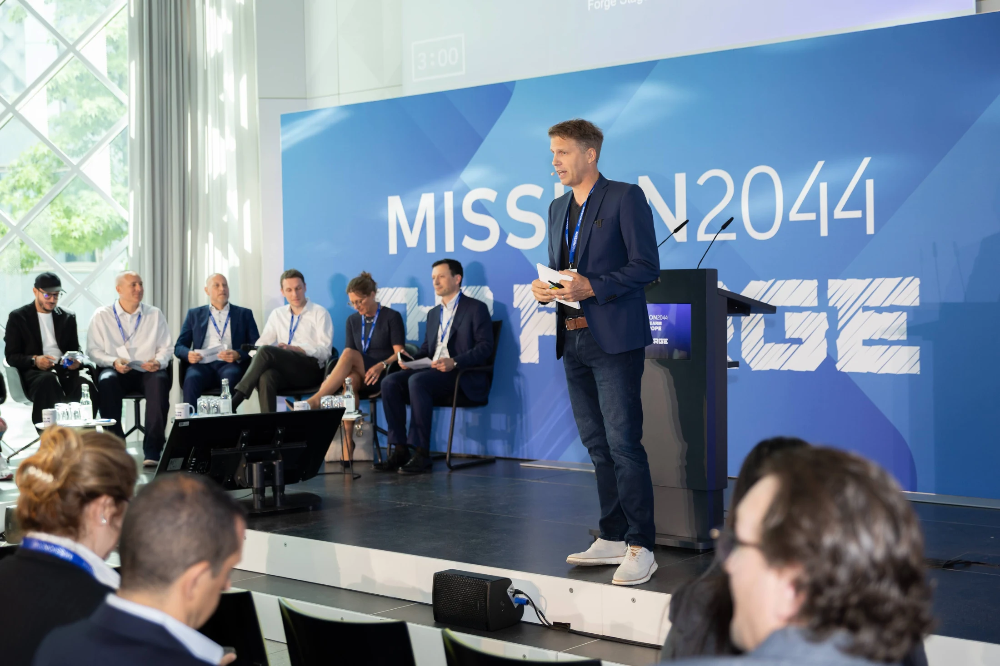
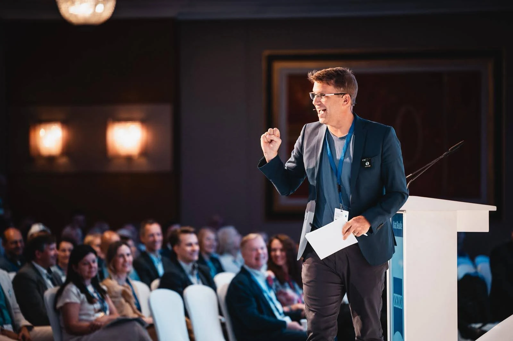
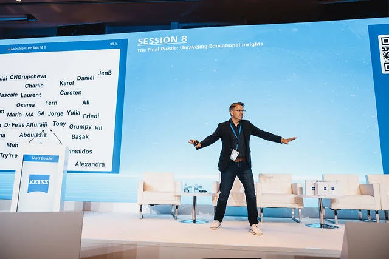
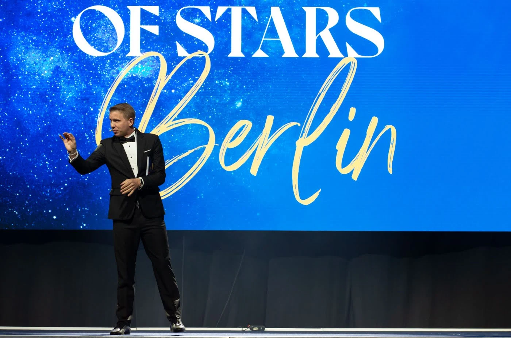
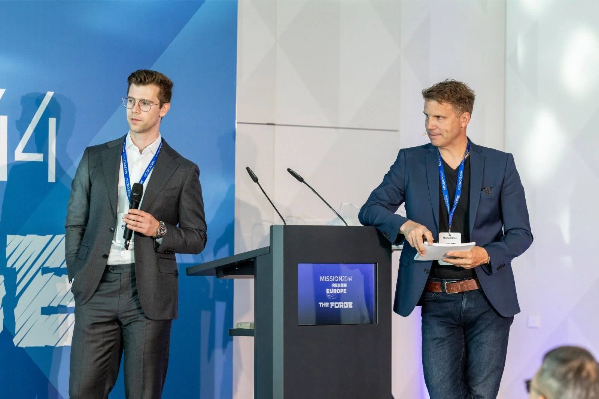
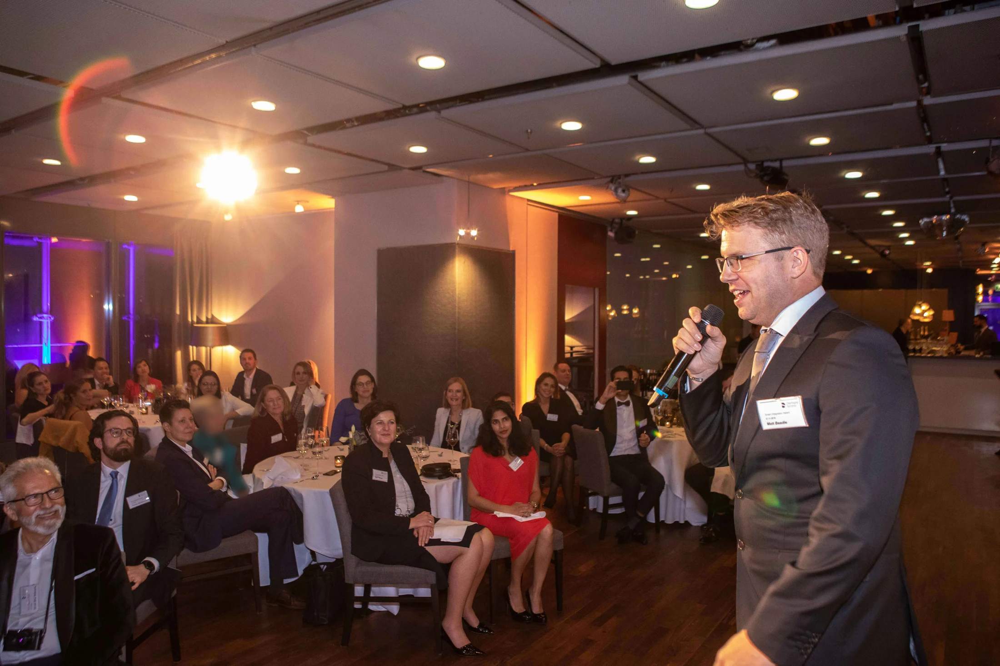
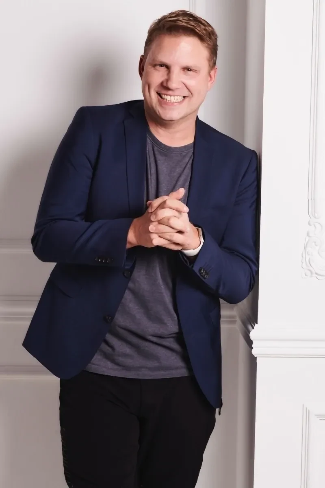

01
Guide the conversation.
From the first welcome to the final question, I bring structure, curiosity and warmth to live events, panels and productions.
Meet your moderatorMatt Beadle · Moderator & presenter
I help international audiences connect with the people and ideas on stage. Live events, product and brand films, live broadcasts and keynotes, in English and German.
British moderator, host, MC and keynote speaker, based near Bielefeld, Germany. Native English. Fluent German. Working internationally.

In the room. In the moment.Selected past collaborations
Two ways to work together
Different roles. The same focus on making people feel involved, interested and ready to contribute.

From the first welcome to the final question, I bring structure, curiosity and warmth to live events, panels and productions.
Meet your moderator
Keynotes on intrinsic motivation, strengths and positive leadership. Fresh perspectives, real experience and practical questions to take back to work.
Explore the keynotesSee the difference
See my work on stage and on camera. Choose the role that fits your event.
A feel for the work

Live events
Welcomes, transitions and moments of interaction that make the programme feel like one event.

Panels & interviews
Questions that make space for interesting answers, with structure that helps everyone follow.

Audience involvement
An attentive room is a good start. A room that feels able to contribute is even better.

A little about me
I’m Matt: a husband, father, uncle, brother and friend. A British host, moderator, speaker and author based in Germany — and, for my sins, a Chelsea fan.
Away from the stage, I play a bit of guitar and golf, tackle the occasional DIY project and love watching my daughter sing or cheering on my son as he plays football.
For over 15 years, I’ve been on stages all over the world, working with all sorts of clients on all sorts of projects. The one thing they have in common? People. Different backgrounds, different stories and the pleasure of bringing them together.
This work doesn’t feel like work. I still have to pinch myself that I get to do it. I’m very lucky.
There’s an old saying: “Choose a job you love, and you’ll never have to work a day in your life.” That rather sums it up for me.
“If they are laughing, they are listening.”An old adage shared by Garr Reynolds in Presentation Zen
“If you’re not appearing, you’re disappearing.”Attributed to jazz drummer Art Blakey
Useful thinking
A useful briefing does more than explain the running order. It gives your host a clear picture of the people, the purpose and the language journey.
Read the articleA panel needs more than interesting people and a row of chairs. It needs a question worth exploring and enough structure for the audience to follow.
Read the articleThe right language choice begins with who needs to take part, what they need to understand and how you want them to contribute.
Read the articleClient feedback
Highlights from client feedback, summarised and credited by role.
Tell me what you have in mind. We’ll start with a conversation.